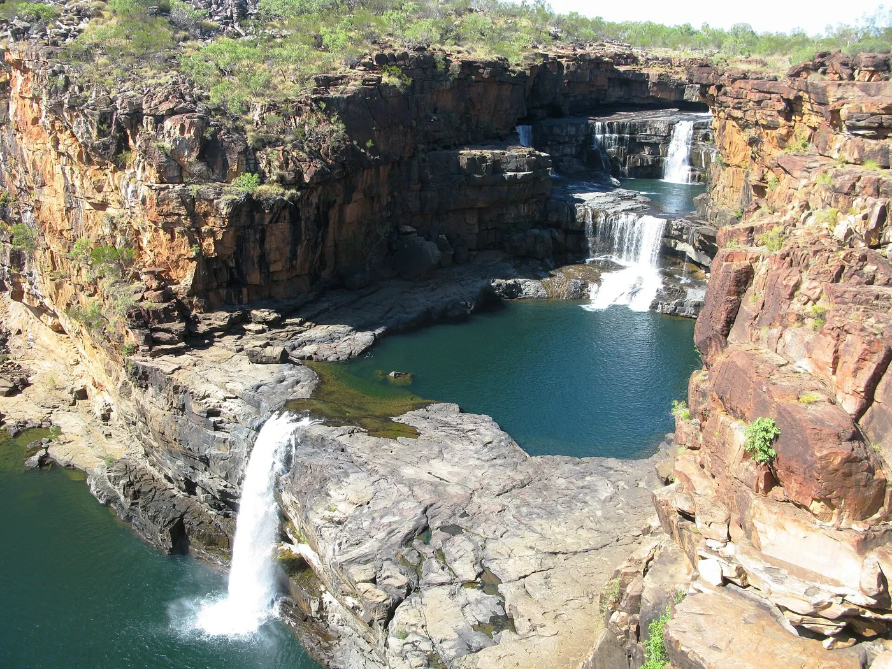
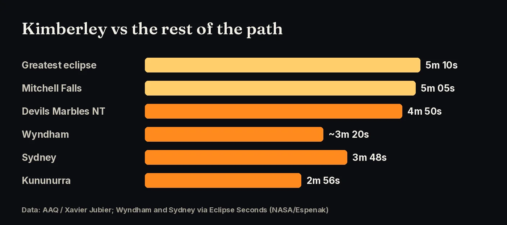
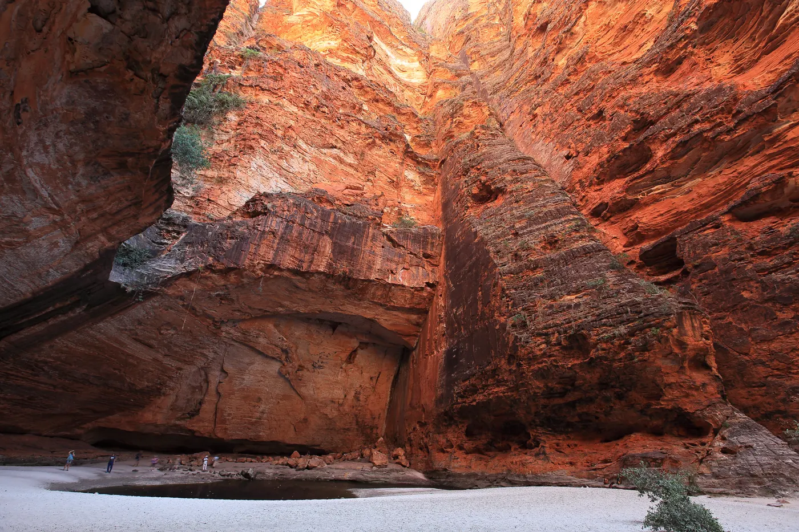
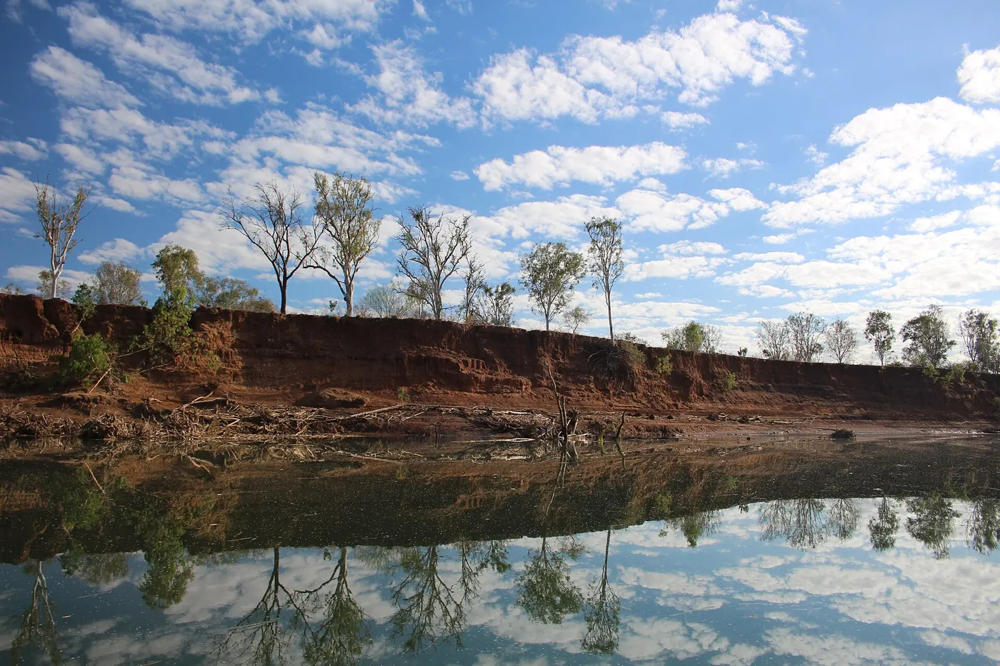
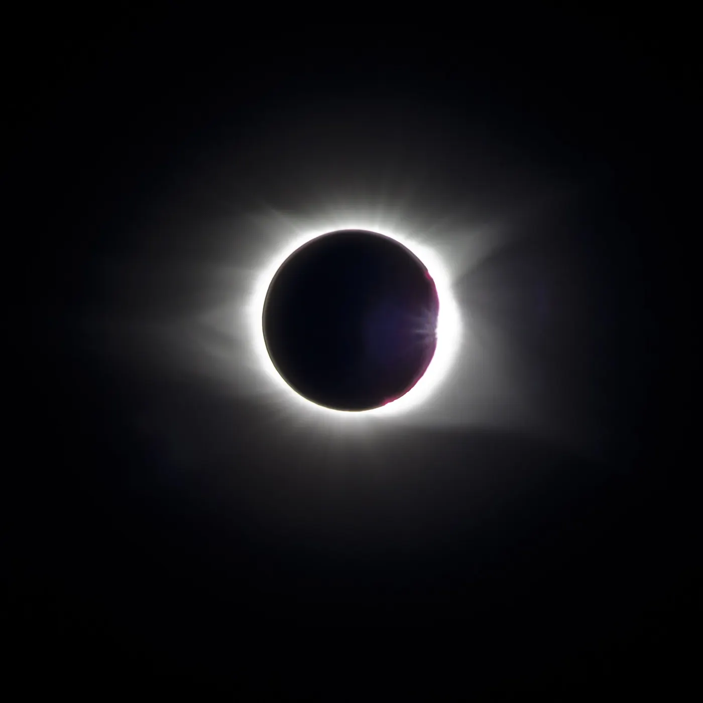

Up to 5 minutes 10 seconds of darkness in the dry-season Kimberley, the longest totality and some of the best weather odds on the 2028 path.
until totality at Mitchell Falls, 22 July 2028 at 10:49 am AWST

The Moon’s shadow reaches mainland Australia on the Kimberley coast. AAQ puts the greatest eclipse, the point with the longest totality on the whole path, in the Kimberley at 5 minutes 10 seconds. Here the path is about 230 km wide and the shadow moves at about 2,150 km/h, its slowest speed over Australia. It is also mid-morning, so the Sun is high, about 53° up.
| Location | Partial begins | Totality begins | Totality | Sun alt. |
|---|---|---|---|---|
| Greatest eclipse (centreline) | — | — | 5m 10s | — |
| Mitchell Falls, WA | 9:19 am | 10:49:05 am | 5m 05s | 53° |
| Wyndham, WA | — | 10:57:33 am | 3m 19–24s | 53° |
| Kununurra, WA | 9:28 am | 10:59:32 am | 2m 56s | 53° |
All times are AWST (UTC+8). Totality falls off quickly toward the edges of the path. Kununurra is close to the edge, which is why it gets less than 3 minutes. Click your exact spot on the path map.

Sources: AAQ (Xavier Jubier data); Eclipse Seconds (NASA/Espenak elements).
July is the dry season in the Kimberley. AAQ, using Jay Anderson’s satellite cloud data, says July cloud is lowest in north-western Australia, so this part of the path has the best chance of clear skies. Eclipse Seconds reports that about 75% of July days are clear at Wyndham. No forecast is guaranteed, so plan to be able to move.


Sources: AAQ (Xavier Jubier data); Eclipse Seconds (NASA/Espenak elements).
Kununurra and Broome are the main gateways, with flights from Perth and Darwin. The best centreline sites, around the Mitchell Plateau, are very remote. Plan for 4WD tracks or a guided tour or flight, and be self-sufficient with fuel, food and water. Check road and park access with WA Parks and Wildlife before you go, and book early, because there are few beds.

Sources: AAQ (Xavier Jubier data)
Wear ISO 12312-2 certified eclipse glasses for every partial phase. Take them off only during totality, and put them back on when the diamond ring appears. See the photography guide for camera filters.
Sources: AAQ (Xavier Jubier data)
Click any point on the path map for exact totality times, and vote for where the community gathers.